The correlation energy, Ec, for a homogeneous electron gas comes from a set of quantum Monte Carlo calculations performed by Ceperley and Alder [20]. These were later parameterised by Perdew and Zunger [21]. Slight improvements to these parameterisations have been made since, for example Perdew and Wang [22], but AIMPRO uses the Perdew and Zunger parameterisations in order to remain consistent with the pseudopotential parameters of Bachelet, Hamman and Schlüter [23] (see Section 2.7 below).
The results of Ceperley and Alder apply to low density electron gases, and can be combined with results from perturbation theory for high density gases to cover a wide density range. Defining the correlation energy per electron, 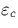, polarisation 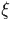 and Wigner-Seitz radius of each electron, rs as:
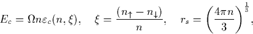
where n is the electron density, for the non-polarised (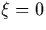) and fully-polarised (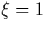) cases, is given by[21]:
| 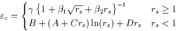 | (8) |
| 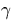 | 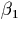 | 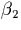 | ||
| Non-polarised | -0.1423 | 1.0529 | 0.3334 | |
| Polarised | -0.0843 | 1.3981 | 0.2611 | |
| A | B | C | D | |
| Non-polarised | 0.0311 | -0.0480 | 0.0020 | -0.0116 |
| Polarised | 0.0155 | -0.0269 | 0.0007 | -0.0048 |
The value of the coefficients , and are given in Table 2.1. When the gas is only partially polarised (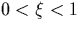), an average of the polarised and non-polarised cases is taken[24],
It is possible to simplify these expressions however; to a good approximation the non-polarised and fully polarised energies vary as 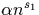 and 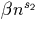 respectively. Therefore for the exchange-correlation energy used in AIMPRO, we use a simplified expression:
| i | Ai | pi | qi |
| 1 | -0.9305 | 0.3333 | 0.0000 |
| 2 | -0.0361 | 0.0000 | 0.0000 |
| 3 | 0.2327 | 0.4830 | 1.0000 |
| 4 | -0.2324 | 0.0000 | 1.0000 |
| i | A'i | p'i | q'i |
| 1 | -0.9305 | 0.3333 | 0.0000 |
| 2 | -0.0375 | 0.1286 | 0.0000 |
| 3 | -0.0796 | 0.0000 | 0.1286 |
The coefficients, Ai, pi and qi are given in Table 2.2. For larger density values (n > 1), an alternative set of parameters are used, A'i, p'i and q'i (also listed in Table 2.2), which are more accurate in the high density regime. The error when using these approximations is normally less than 3% for densities up to n = 15. For calculations such as these with no heavier metal impurities, the density is normally in the range 0 < n < 1.